មូលដ្ឋានគ្រឹះនៃវ៉ិចទ័រក្នុងលំហក៏ដូចវ៉ិចទ័រក្នុងប្លង់ដែរ ប៉ុន្តែគ្រាន់តែយើងសិក្សាឱ្យស៊ីជម្រៅជាងមុនបន្តិច គឺយើងសិក្សាលើតម្រុយដែលមានអ័ក្សបី ។ អស់រយៈពេលជាយូរមកហើយ វ៉ិចទ័របានពង្រីកបញ្ញត្តិធរណីមាត្រឱ្យកាន់តែស៊ីជម្រៅលើផ្នែកគណិតវិទ្យា ហើយដែលរៀបរាប់តាមរយៈ “វ៉ិចទ័រក្នុងលំហ” ។ Giuseppe Peano (1858–1932) ជាគណិតវិទូដែលបានសិក្សាលើបញ្ញត្តិនៃវ៉ិចទ័រក្នុងលំហ និងប្រព័ន្ធស្វ័យសត្យនៃចំនួនគត់ធម្មជាតិ ។
- កំណត់និយមន័យនៃវ៉ិចទ័រក្នុងលំហ
- គណនាប្រមាណវិធីលើវ៉ិចទ័រក្នុងលំហ
- គណនាកូអរដោនេនៃវ៉ិចទ័រក្នុងលំហ
- គណនាផលគុណស្កាលែនៃវ៉ិចទ័រក្នុងលំហ ។
1. វ៉ិចទ័រក្នុងលំហ
1.1. សញ្ញាណវ៉ិចទ័រ
ឧទាហរណ៍ : ចលនានៃចំណុចផ្លាស់ទីពី \(\displaystyle A\) ទៅ \(\displaystyle B\) ក្នុងលំហ អាចតាងដោយអង្កត់មានទិសដៅ \(\displaystyle AB\) ដែលមានព្រួញ (ដូចរូបខាងក្រោម) ។ អង្កត់មានទិសដៅ \(\displaystyle AB\) ហៅថា វ៉ិចទ័រក្នុងលំហ ដែលមាន \(\displaystyle A\) ជាគល់ និង \(\displaystyle B\) ជាចុង ។ គេកំណត់សរសេរដោយ \(\displaystyle \vec{AB}\) ។
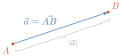
និយមន័យ អង្កត់មានទិសដៅ \(\displaystyle AB\) នៅក្នុងលំហហៅថា វ៉ិចទ័រក្នុងលំហ ដែលមាន \(\displaystyle A\) ជាគល់ និង \(\displaystyle B\) ជាចុង ។ គេកំណត់សរសេរដោយ \(\displaystyle \vec{AB}\) ។
គេតាងអក្សរណាមួយក៏បានសម្រាប់តាងឱ្យវ៉ិចទ័រ ។ ឧទាហរណ៍ : \(\displaystyle \vec{AB}=\vec{a}, \vec{CD}=\vec{u}\), ... ។ \(\displaystyle AB=|\vec{AB}|\) ឬ \(\displaystyle a=|\vec{a}|\) ហៅថា ប្រវែងនៃវ៉ិចទ័រ \(\displaystyle \vec{AB}\) ឬ \(\displaystyle \vec{a}\) ។
វ៉ិចទ័រស្មើគ្នាក្នុងលំហ
ឧទាហរណ៍ : គេមានគូប \(\displaystyle ABCD-EFGH\) មួយ (ដូចរូប) ។ វ៉ិចទ័រ \(\displaystyle \vec{AB}\) និង \(\displaystyle \vec{DC}\) មានប្រវែងស្មើគ្នានិងស្របគ្នា ហើយមានទិសដៅដូចគ្នា នោះគេថា \(\displaystyle \vec{AB}\) ជាវ៉ិចទ័រស្មើគ្នានឹង \(\displaystyle \vec{DC}\) ។ គេសរសេរដោយ \(\displaystyle \vec{AB}=\vec{DC}\) ដូចគ្នាដែរវ៉ិចទ័រ \(\displaystyle \vec{EH}=\vec{FG}\) ។
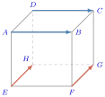
និយមន័យ គេបានវ៉ិចទ័រ \(\displaystyle \vec{AB}=\vec{DC}\) កាលណាវា
- ស្របគ្នាឬមានទម្ររួម
- មានទិសដៅដូចគ្នា
- មានប្រវែងស្មើគ្នា \(\displaystyle (|\vec{AB}|=|\vec{CD}|)\) ។
\(\displaystyle \vec{AB}=-\vec{BA}\)
វ៉ិចទ័រផ្ទុយគ្នាក្នុងលំហ
ឧទាហរណ៍ : គេមានគូប \(\displaystyle ABCD-EFGH\) ។ វ៉ិចទ័រ \(\displaystyle \vec{AB}\) និង \(\displaystyle \vec{CD}\) មានប្រវែងស្មើគ្នា និងស្របគ្នា ហើយមានទិសដៅផ្ទុយគ្នា នោះគេថា \(\displaystyle \vec{CD}\) ជាវ៉ិចទ័រផ្ទុយគ្នានឹងវ៉ិចទ័រ \(\displaystyle \vec{AB}\) ។ គេសរសេរដោយ \(\displaystyle \vec{AB}=-\vec{CD}\) ឬ \(\displaystyle \vec{CD}=-\vec{AB}\) ។ ដូចគ្នាដែរ \(\displaystyle \vec{EH}=-\vec{GF}\) ឬ \(\displaystyle \vec{GF}=-\vec{EH}\) នោះគេថា \(\displaystyle \vec{GF}\) ជាវ៉ិចទ័រផ្ទុយគ្នានឹងវ៉ិចទ័រ \(\displaystyle \vec{EH}\) ។
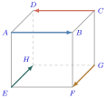
និយមន័យ គេបានវ៉ិចទ័រ \(\displaystyle \vec{AB}=-\vec{CD}\) កាលណាវា
- ស្របគ្នាឬមានទម្ររួម
- មានទិសដៅផ្ទុយគ្នា
- មានប្រវែងស្មើគ្នា \(\displaystyle (|\vec{AB}|=|\vec{CD}|)\) ។
វ៉ិចទ័រសូន្យ
និយមន័យ វ៉ិចទ័រ \(\displaystyle \vec{a}\) ជាវ៉ិចទ័រសូន្យ លុះត្រាតែ \(\displaystyle |\vec{a}|=0\) ។ គេកំណត់វ៉ិចទ័រសូន្យដោយ \(\displaystyle \vec{AA}=\vec{0}, \vec{BB}=\vec{0}\), ... ។
គេឱ្យប្រលេពីប៉ែតកែង \(\displaystyle ABCD-EFGH\) មួយ ។
- ក. រកវ៉ិចទ័រដែលស្មើនឹង \(\displaystyle \vec{AB}\), \(\displaystyle \vec{AD}\) និង \(\displaystyle \vec{AE}\) ។
- ខ. តើវ៉ិចទ័រ \(\displaystyle \vec{AD}\) និង \(\displaystyle \vec{CB}\), \(\displaystyle \vec{AB}\) និង \(\displaystyle \vec{FE}\), \(\displaystyle \vec{AE}\) និង \(\displaystyle \vec{HD}\) ជាវ៉ិចទ័រយ៉ាងដូចម្តេចនឹងគ្នា?
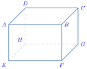
- ក. តាមរូបគេបាន \(\displaystyle \vec{AB}=\vec{DC}=\vec{EF}=\vec{HG}\)
\(\displaystyle \vec{AD}=\vec{BC}=\vec{EH}=\vec{FG}\)
\(\displaystyle \vec{AE}=\vec{BF}=\vec{DH}=\vec{CG}\) ។ - ខ. វ៉ិចទ័រ \(\displaystyle \vec{AD}\) និង \(\displaystyle \vec{CB}\) ជាវ៉ិចទ័រផ្ទុយគ្នា ។
វ៉ិចទ័រ \(\displaystyle \vec{AB}\) និង \(\displaystyle \vec{FE}\) ជាវ៉ិចទ័រផ្ទុយគ្នា ។
វ៉ិចទ័រ \(\displaystyle \vec{AE}\) និង \(\displaystyle \vec{HD}\) ជាវ៉ិចទ័រផ្ទុយគ្នា ។
គេឱ្យប្រលេពីប៉ែតទ្រេត \(\displaystyle ABCD-EFGH\) មួយ ។
- ក. រកវ៉ិចទ័រដែលស្មើនឹង \(\displaystyle \vec{AB}\), \(\displaystyle \vec{AD}\) និង \(\displaystyle \vec{AE}\) ។
- ខ. តើវ៉ិចទ័រ \(\displaystyle \vec{AD}\) និង \(\displaystyle \vec{CB}\), \(\displaystyle \vec{AB}\) និង \(\displaystyle \vec{FE}\), \(\displaystyle \vec{AE}\) និង \(\displaystyle \vec{HD}\) ជាវ៉ិចទ័រយ៉ាងដូចម្តេចនឹងគ្នា?
មើលចម្លើយ
- ក. ស្មើនឹង \(\displaystyle \vec{AB}\) មាន \(\displaystyle \vec{DC}\), \(\displaystyle \vec{EF}\) និង \(\displaystyle \vec{HG}\)
ស្មើនឹង \(\displaystyle \vec{AD}\) មាន \(\displaystyle \vec{BC}\), \(\displaystyle \vec{EH}\) និង \(\displaystyle \vec{FG}\)
ស្មើនឹង \(\displaystyle \vec{AE}\) មាន \(\displaystyle \vec{DH}\), \(\displaystyle \vec{BF}\) និង \(\displaystyle \vec{CG}\) ។ - ខ. ជាវ៉ិចទ័រផ្ទុយគ្នា ។
B. ប្រមាណវិធីនៃវ៉ិចទ័រក្នុងលំហ
ប្រមាណវិធីបូកនិងដក
ប្រមាណវិធីបូក
ឧទាហរណ៍ : គេមានប្រលេពីប៉ែត \(\displaystyle ABCD-EFGH\) មួយដែលមានបាតជាប្រលេឡូក្រាម ។
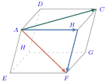
- ក.
ករណីវ៉ិចទ័រតគ្នា \(\displaystyle \vec{AB}\) និង \(\displaystyle \vec{BF}\) ហៅថា វ៉ិចទ័រតគ្នា
- បើគេផ្លាស់ទីពីចំណុច \(\displaystyle A\) ទៅ \(\displaystyle B\) ហើយពីចំណុច \(\displaystyle B\) ទៅ \(\displaystyle F\) នោះមានន័យថា គេបានផ្លាស់ទីពីចំណុច \(\displaystyle A\) ទៅចំណុច \(\displaystyle F\) ។
ដូច្នេះ \(\displaystyle \vec{AB}+\vec{BF}=\vec{AF}\) ។
- ខ. ករណីវ៉ិចទ័រមានគល់រួម (វិធានប្រលេឡូក្រាម) \(\displaystyle \vec{AB}\) និង \(\displaystyle \vec{AD}\) ហៅថា វ៉ិចទ័រមានគល់រួមគ្នា តាមរូប \(\displaystyle \vec{AD}=\vec{BC}\) គេបាន \(\displaystyle \vec{AB}+\vec{AD}=\vec{AB}+\vec{BC}=\vec{AC}\), (\(\displaystyle \vec{AC}\) ជាវ៉ិចទ័រអង្កត់ទ្រូង) ដូច្នេះ \(\displaystyle \vec{AB}+\vec{AD}=\vec{AC}\) ដែល \(\displaystyle \vec{AC}\) ជាវ៉ិចទ័រអង្កត់ទ្រូងប្រលេឡូក្រាមមានវិមាត្រ \(\displaystyle |\vec{AB}|\) និង \(\displaystyle |\vec{AD}|\) ។
ប្រមាណវិធីដក
គេមាន \(\displaystyle \vec{AB}+\vec{BC}=\vec{AC} \iff -\vec{BA}+\vec{BC}=\vec{AC}\) ព្រោះ \(\displaystyle \vec{AB}=-\vec{BA}\)
គេឱ្យប្រលេពីប៉ែតកែង \(\displaystyle ABCD-EFGH\) មួយ ។ គេតាង \(\displaystyle \vec{AB}=\vec{a}\), \(\displaystyle \vec{AD}=\vec{b}\) និង \(\displaystyle \vec{AE}=\vec{c}\) ។ ចូររកវ៉ិចទ័រ
- ក. \(\displaystyle \vec{AG}\) ជាអនុគមន៍នៃ \(\displaystyle \vec{a}\), \(\displaystyle \vec{b}\) និង \(\displaystyle \vec{c}\)
- ខ. \(\displaystyle \vec{FD}\) ជាអនុគមន៍នៃ \(\displaystyle \vec{a}\), \(\displaystyle \vec{b}\) និង \(\displaystyle \vec{c}\) ។
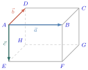
- ក. \(\displaystyle \vec{AG}=\vec{AB}+\vec{BC}+\vec{CG}=\vec{a}+\vec{b}+\vec{c}\)
- ខ. \(\displaystyle \vec{FD}=\vec{FE}+\vec{EH}+\vec{HD}=-\vec{a}+\vec{b}+(-\vec{c})=-\vec{a}+\vec{b}-\vec{c}\) ។
គេឱ្យប្រលេពីប៉ែត \(\displaystyle OADB-CEFG\) មួយ ។ គេតាង \(\displaystyle \vec{OA}=\vec{a}, \vec{OB}=\vec{b}\) និង \(\displaystyle \vec{OC}=\vec{c}\) ដូចរូប ។ ចូររកវ៉ិចទ័រខាងក្រោមជាអនុគមន៍នៃ \(\displaystyle \vec{a}, \vec{b}\) និង \(\displaystyle \vec{c}\) (\(\displaystyle P\) ជាចំណុចប្រសព្វនៃអង្កត់ទ្រូងបាត \(\displaystyle CEFG\)) ៖
- ក. \(\displaystyle \vec{AG}\)
- ខ. \(\displaystyle \vec{OP}\)
- គ. \(\displaystyle \vec{PD}\) ។
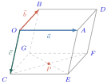
មើលចម្លើយ
- ក. \(\displaystyle \vec{AG}=-\vec{a}+\vec{b}+\vec{c}\)
- ខ. \(\displaystyle \vec{OP}=\frac{1}{2}\vec{a}+\frac{1}{2}\vec{b}+\vec{c}\)
- គ. \(\displaystyle \vec{PD}=\frac{1}{2}\vec{a}+\frac{1}{2}\vec{b}-\vec{c}\) ។
ប្រមាណវិធីគុណវ៉ិចទ័រនឹងចំនួនពិត
និយមន័យ
ឧទាហរណ៍ : ចំពោះរូបខាងក្រោម \(\displaystyle M\) និង \(\displaystyle N\) ជាចំណុចកណ្តាលនៃជ្រុង \(\displaystyle PQ\) និង \(\displaystyle PR\) របស់ត្រីកោណ \(\displaystyle PQR\) រៀងគ្នា ។
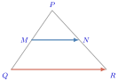
គេបាន \(\displaystyle \vec{QR}\) និង \(\displaystyle \vec{MN}\) មានទិសដៅដូចគ្នានិងស្របគ្នា ហើយ \(\displaystyle QR=2MN\) នោះ \(\displaystyle \vec{QR}=2\vec{MN}\) ឬ \(\displaystyle MN=\frac{1}{2}QR\) នោះ \(\displaystyle \vec{MN}=\frac{1}{2}\vec{QR}\) ។ គេបានផងដែរ
- \(\displaystyle \vec{QR}=2\vec{MN}\) នោះ \(\displaystyle \vec{QR}=-2\vec{NM}\)
- \(\displaystyle \vec{MN}=\frac{1}{2}\vec{QR}\) នោះ \(\displaystyle \vec{MN}=-\frac{1}{2}\vec{RQ}\) ។
តាមឧទាហរណ៍នេះគេទាញបាន និយមន័យ គេឱ្យវ៉ិចទ័រ \(\displaystyle \vec{a}\neq\vec{0}\) ដែល \(\displaystyle \vec{b}=k\vec{a}\) \(\displaystyle (k\neq 0)\) ជាវ៉ិចទ័រដែលកំណត់ដោយ៖
- \(\displaystyle \vec{b} \parallel \vec{a}\)
- \(\displaystyle |\vec{b}|=|k|\cdot|\vec{a}|\)
- \(\displaystyle \vec{b}\) មានទិសដៅដូច \(\displaystyle \vec{a}\) បើ \(\displaystyle k>0\) ហើយ \(\displaystyle \vec{b}\) មានទិសដៅផ្ទុយ \(\displaystyle \vec{a}\) បើ \(\displaystyle k<0\) ។
វ៉ិចទ័រកូលីនេអ៊ែរ
និយមន័យ ពីរវ៉ិចទ័រ \(\displaystyle \vec{a}\neq\vec{0}\) និង \(\displaystyle \vec{b}\neq\vec{0}\) ជាវ៉ិចទ័រកូលីនេអ៊ែរ លុះត្រាតែ \(\displaystyle \vec{a}=m\vec{b}\) ដែល \(\displaystyle m\) ជាចំនួនពិត ។ គេកំណត់សរសេរដោយ \(\displaystyle \vec{a} \parallel \vec{b} \iff \vec{a}=m\vec{b}\) ។
វ៉ិចទ័រឯកតា
និយមន័យ វ៉ិចទ័រដែលមានប្រវែងស្មើនឹង \(\displaystyle 1\) ហៅថា វ៉ិចទ័រឯកតា ។ បើ \(\displaystyle \vec{a}\) ជាវ៉ិចទ័រមិនសូន្យ នោះគេបាន \(\displaystyle \vec{u}=\frac{\vec{a}}{|\vec{a}|}\) ជាវ៉ិចទ័រឯកតានៃ \(\displaystyle \vec{a}\) ហើយមានទិសដៅដូច \(\displaystyle \vec{a}\) ។
លក្ខណៈនៃប្រមាណវិធីបូកនិងប្រមាណវិធីគុណវ៉ិចទ័រនឹងចំនួនពិតក្នុងលំហ
បើពីរវ៉ិចទ័រ \(\displaystyle \vec{a}\) និង \(\displaystyle \vec{b}\) នៅក្នុងលំហ ហើយពីរចំនួនពិត \(\displaystyle m\) និង \(\displaystyle n\) នោះគេបាន ៖
- \(\displaystyle \vec{a}+\vec{b}=\vec{b}+\vec{a}\)
- \(\displaystyle (\vec{a}+\vec{b})+\vec{c}=\vec{a}+(\vec{b}+\vec{c})\)
- \(\displaystyle (mn)\vec{a}=m(n\vec{a})\)
- \(\displaystyle (m+n)\vec{a}=m\vec{a}+n\vec{a}\)
- \(\displaystyle m(\vec{a}+\vec{b})=m\vec{a}+m\vec{b}\)
- បើ \(\displaystyle m\vec{a}=\vec{0}\) នោះគេបាន \(\displaystyle m=0\) ឬ \(\displaystyle \vec{a}=\vec{0}\) ។
សម្រាយបញ្ជាក់ យើងប្រើដ្យាក្រាមខាងក្រោម ដើម្បីស្រាយបញ្ជាក់លក្ខណៈនេះ ៖
ស្រាយថា \(\displaystyle \vec{a}+\vec{b}=\vec{b}+\vec{a}\)
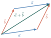
តាមដ្យាក្រាម គេបាន \(\displaystyle \vec{a}+\vec{b}=\vec{b}+\vec{a}\)
ស្រាយថា \(\displaystyle (\vec{a}+\vec{b})+\vec{c}=\vec{a}+(\vec{b}+\vec{c})\)
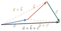
តាមដ្យាក្រាម គេបាន \(\displaystyle (\vec{a}+\vec{b})+\vec{c}=\vec{a}+(\vec{b}+\vec{c})\)
គណនាកន្សោមខាងក្រោម៖
- ក. \(\displaystyle 3\vec{a}+4\vec{a}-2\vec{a}\)
- ខ. \(\displaystyle 2(\vec{a}+5\vec{b})+3(2\vec{a}-\vec{b})\) ។
រក \(\displaystyle \vec{x}\) ដែលផ្ទៀងផ្ទាត់សមីការខាងក្រោមជាអនុគមន៍នៃ \(\displaystyle \vec{a}\) និង \(\displaystyle \vec{b}\)៖
- ក. \(\displaystyle 2\vec{a}+\vec{x}=3\vec{b}+2\vec{x}\)
- ខ. \(\displaystyle 4\vec{x}-\vec{a}=3\vec{a}-4\vec{b}+2\vec{x}\) ។
- ក. \(\displaystyle 3\vec{a}+4\vec{a}-2\vec{a}=(3+4-2)\vec{a}=5\vec{a}\)
- ខ. \(\displaystyle 2(\vec{a}+5\vec{b})+3(2\vec{a}-\vec{b})=2\vec{a}+10\vec{b}+6\vec{a}-3\vec{b}=(2+6)\vec{a}+(10-3)\vec{b}=8\vec{a}+7\vec{b}\) ។
- ក. \(\displaystyle 2\vec{a}+\vec{x}=3\vec{b}+2\vec{x} \implies 2\vec{x}-\vec{x}=2\vec{a}-3\vec{b} \iff (2-1)\vec{x}=2\vec{a}-3\vec{b} \implies \vec{x}=2\vec{a}-3\vec{b}\) ។
- ខ. \(\displaystyle 4\vec{x}-\vec{a}=3\vec{a}-4\vec{b}+2\vec{x} \implies 4\vec{x}-2\vec{x}=3\vec{a}+\vec{a}-4\vec{b} \implies (4-2)\vec{x}=4\vec{a}-4\vec{b} \implies 2\vec{x}=4(\vec{a}-\vec{b}) \implies \vec{x}=2(\vec{a}-\vec{b})\) ។
គណនាកន្សោមខាងក្រោម៖
- ក. \(\displaystyle 3(2\vec{a}-\vec{b})+4(\vec{a}-2\vec{b})\)
- ខ. \(\displaystyle 2(-\vec{a}+3\vec{b})-(5\vec{a}-4\vec{b})\)
- គ. \(\displaystyle \frac{1}{3}(\vec{a}+2\vec{b})+\frac{2}{3}(\vec{a}-\vec{b})\)
- ឃ. \(\displaystyle \frac{1}{2}(-\vec{a}+2\vec{b})-\frac{1}{3}(2\vec{a}+\vec{b})\) ។
រក \(\displaystyle \vec{x}\) ដែលផ្ទៀងផ្ទាត់សមីការខាងក្រោមជាអនុគមន៍នៃ \(\displaystyle \vec{a}\) និង \(\displaystyle \vec{b}\)៖
- ក. \(\displaystyle 3(\vec{a}+\vec{x})=2(\vec{x}-3\vec{b})\)
- ខ. \(\displaystyle 2\vec{b}-7\vec{x}=3(4\vec{a}+\vec{b})+4(2\vec{a}+\vec{b}-3\vec{x})\)
- គ. \(\displaystyle \vec{x}-2\vec{a}=\vec{x}-4\vec{b}\)
- ឃ. \(\displaystyle 2(\vec{a}+\vec{x})+3(\vec{b}-\vec{x})=\vec{0}\) ។
មើលចម្លើយ
- ក. \(\displaystyle 10\vec{a}-11\vec{b}\)
- ខ. \(\displaystyle -7\vec{a}+10\vec{b}\)
- គ. \(\displaystyle \vec{a}\)
- ឃ. \(\displaystyle -\frac{7}{6}\vec{a}+\frac{2}{3}\vec{b}\) ។
- ក. \(\displaystyle \vec{x}=-3\vec{a}-6\vec{b}\)
- ខ. \(\displaystyle \vec{x}=4\vec{a}+\vec{b}\)
- គ. គ្មានចម្លើយ
- ឃ. \(\displaystyle \vec{x}=2\vec{a}+3\vec{b}\) ។
C. កូអរដោនេក្នុងលំហ
តម្រុយក្នុងលំហ
និយមន័យ គេហៅតម្រុយក្នុងលំហ គឺគ្រប់ចតុធាតុ \(\displaystyle (O, \vec{i}, \vec{j}, \vec{k})\) ដែល \(\displaystyle O\) ជាចំណុចមួយក្នុងលំហ និង \(\displaystyle \vec{i}, \vec{j}, \vec{k}\) ជាបីវ៉ិចទ័រមិនស្ថិតនៅក្នុងប្លង់តែមួយ ។
- ចំណុច \(\displaystyle O\) ហៅថា គល់តម្រុយ
- វ៉ិចទ័រ \(\displaystyle \vec{i}\) ហៅថា វ៉ិចទ័រឯកតា នៃអ័ក្សអាប់ស៊ីស \(\displaystyle (x'x)\)
- វ៉ិចទ័រ \(\displaystyle \vec{j}\) ហៅថា វ៉ិចទ័រឯកតា នៃអ័ក្សអរដោនេ \(\displaystyle (y'y)\)
- វ៉ិចទ័រ \(\displaystyle \vec{k}\) ហៅថា វ៉ិចទ័រឯកតា នៃអ័ក្សកូត \(\displaystyle (z'z)\)
- \(\displaystyle (x'x), (y'y), (z'z)\) ហៅថា អ័ក្ស ។
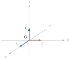
គោលនិងតម្រុយអរតូណរម៉ាល់
គោលអរតូណរម៉ាល់
គេឱ្យមុំកែង \(\displaystyle xOy\) និងកន្លះបន្ទាត់ \(\displaystyle Oz\) នៅក្នុងលំហមានគល់ \(\displaystyle O\) ដែលអរតូកូណាល់នឹងប្លង់ \(\displaystyle xOy\) ។ យើងតាង \(\displaystyle I, J, K\) ជាបីចំណុចស្ថិតនៅលើកន្លះបន្ទាត់ \(\displaystyle Ox, Oy, Oz\) រៀងគ្នាដែល \(\displaystyle OI=OJ=OK=1\) ។ គេកំណត់ \(\displaystyle \vec{i}=\vec{OI}\), \(\displaystyle \vec{j}=\vec{OJ}\), \(\displaystyle \vec{k}=\vec{OK}\) ដែល \(\displaystyle O, I, J, K\) មិនស្ថិតនៅក្នុងប្លង់តែមួយ ។ វ៉ិចទ័រ \(\displaystyle \vec{i}, \vec{j}, \vec{k}\) ផ្តុំបានគោលនៃលំហមួយ ។ ម្យ៉ាងទៀត វ៉ិចទ័រទាំងបីនេះ ជាវ៉ិចទ័រឯកតាហើយអរតូកូណាល់គ្នាពីរៗ ។
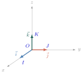
និយមន័យ គេហៅគោលអរតូណរម៉ាល់នៃវ៉ិចទ័រ គឺគ្រប់ត្រីធាតុ \(\displaystyle (\vec{i}, \vec{j}, \vec{k})\) ដែល \(\displaystyle |\vec{i}|=|\vec{j}|=|\vec{k}|=1\) និង \(\displaystyle \vec{i}\perp\vec{j}\), \(\displaystyle \vec{j}\perp\vec{k}\), \(\displaystyle \vec{k}\perp\vec{i}\) ។
តម្រុយអរតូណរម៉ាល់
និយមន័យ គេហៅថាតម្រុយអរតូណរម៉ាល់ក្នុងលំហ គឺគ្រប់ចតុធាតុ \(\displaystyle (O, \vec{i}, \vec{j}, \vec{k})\) ដែល \(\displaystyle O\) ជាចំណុចមួយនៃលំហហៅថា គល់ និង \(\displaystyle (\vec{i}, \vec{j}, \vec{k})\) ហៅថាគោលអរតូណរម៉ាល់នៃលំហ ។
- បន្ទាត់ \(\displaystyle (x'x)\) ដែលមានទិសដៅតាម \(\displaystyle \vec{i}\) ហៅថា អ័ក្សអាប់ស៊ីស \(\displaystyle (x'x)\) ។
- បន្ទាត់ \(\displaystyle (y'y)\) ដែលមានទិសដៅតាម \(\displaystyle \vec{j}\) ហៅថា អ័ក្សអរដោនេ \(\displaystyle (y'y)\) ។
- បន្ទាត់ \(\displaystyle (z'z)\) ដែលមានទិសដៅតាម \(\displaystyle \vec{k}\) ហៅថា អ័ក្សកូត \(\displaystyle (z'z)\) ។
កូអរដោនេនៃចំណុច និងវ៉ិចទ័រក្នុងលំហ
នៅក្នុងតម្រុយ \(\displaystyle (O, \vec{i}, \vec{j}, \vec{k})\) គេមានចំណុច \(\displaystyle P\) មួយ គេតាងកូអរដោនេនៃ \(\displaystyle P\) ដោយ \(\displaystyle (x, y, z)\) ។ យកចំណុច \(\displaystyle P_{1}(x,0,0)\) នៅលើអ័ក្ស \(\displaystyle x\) \(\displaystyle P_{2}(0,y,0)\) នៅលើអ័ក្ស \(\displaystyle y\) \(\displaystyle P_{3}(0,0,z)\) នៅលើអ័ក្ស \(\displaystyle z\) គេគូសបន្ទាត់ \(\displaystyle PP'\) ពីចំណុច \(\displaystyle P\) ឱ្យកែងទៅនឹងប្លង់ \(\displaystyle (xOy)\) ដូចក្នុងរូបខាងស្តាំ នោះគេបាន
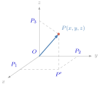
\(\displaystyle \vec{OP}=\vec{OP_{1}}+\vec{P_{1}P'}+\vec{P'P}\) ។ តែ \(\displaystyle \vec{P_{1}P'}=\vec{OP_{2}}\) និង \(\displaystyle \vec{P'P}=\vec{OP_{3}}\) ដូច្នេះ \(\displaystyle \vec{OP}=\vec{OP_{1}}+\vec{OP_{2}}+\vec{OP_{3}}\) (1) ។ ដោយ \(\displaystyle P_{1}\in(Ox)\), \(\displaystyle P_{2}\in(Oy)\) និង \(\displaystyle P_{3}\in(Oz)\) នោះមានចំនួនពិត \(\displaystyle x, y\) និង \(\displaystyle z\) ដែល \(\displaystyle \vec{OP_{1}}=x\vec{i}\), \(\displaystyle \vec{OP_{2}}=y\vec{j}\), \(\displaystyle \vec{OP_{3}}=z\vec{k}\) ។ យក \(\displaystyle \vec{OP_{1}}=x\vec{i}\), \(\displaystyle \vec{OP_{2}}=y\vec{j}\), \(\displaystyle \vec{OP_{3}}=z\vec{k}\) ទៅជំនួសចូលក្នុងទំនាក់ទំនង (1) នាំឱ្យគេបានវ៉ិចទ័រ \(\displaystyle \vec{OP}=x\vec{i}+y\vec{j}+z\vec{k}\) ។ \(\displaystyle (x,y,z)\) ហៅថាកូអរដោនេនៃចំណុច \(\displaystyle P\) ។
ទ្រឹស្តីបទនិងនិយមន័យ គេមានតម្រុយ \(\displaystyle (O, \vec{i}, \vec{j}, \vec{k})\) មួយក្នុងលំហ ចំពោះគ្រប់ចំណុច \(\displaystyle P\) មានត្រីធាតុ \(\displaystyle (x,y,z)\) តែមួយគត់ ដែល \(\displaystyle \vec{OP}=x\vec{i}+y\vec{j}+z\vec{k}\) ។ ត្រីធាតុ \(\displaystyle (x,y,z)\) ហៅថាកូអរដោនេនៃចំណុច \(\displaystyle P\) គេកំណត់សរសេរ \(\displaystyle P(x,y,z)\) ហើយ \(\displaystyle x\) ជាអាប់ស៊ីស \(\displaystyle y\) ជាអរដោនេ និង \(\displaystyle z\) ជាកូត ។
ករណីពិសេស វ៉ិចទ័រឯកតា \(\displaystyle \vec{i}=(1,0,0)\), \(\displaystyle \vec{j}=(0,1,0)\), \(\displaystyle \vec{k}=(0,0,1)\) ។
ម្យ៉ាងទៀត \(\displaystyle (x,y,z)=(x',y',z')\) សមមូល \(\displaystyle (x=x', y=y', z=z')\) ។
- ក. បើ \(\displaystyle z=0\) គេបាន \(\displaystyle \vec{OP}=x\vec{i}+y\vec{j}\) នាំឱ្យ \(\displaystyle P\) ជាចំណុចមួយក្នុងប្លង់ \(\displaystyle xOy\) ។ ច្រាសមកវិញ បើ \(\displaystyle P\) ជាចំណុចនៃប្លង់ \(\displaystyle xOy\) នោះមានគូ \(\displaystyle (x,y)\) នៃចំនួនពិតដែល \(\displaystyle \vec{OP}=x\vec{i}+y\vec{j}\) ។
- ខ. បើ \(\displaystyle x=y=0\) គេបាន \(\displaystyle \vec{OP}=z\vec{k}\) នាំឱ្យ \(\displaystyle P\) ជាចំណុចមួយនៅលើអ័ក្ស \(\displaystyle Oz\) ។
គេឱ្យពីរចំណុច \(\displaystyle A(1,2,4)\) និង \(\displaystyle B(2,-2,2)\) នៅក្នុងតម្រុយអរតូណរម៉ាល់ \(\displaystyle (O, \vec{i}, \vec{j}, \vec{k})\) ។
- ក. ដៅចំណុច \(\displaystyle A\) និង \(\displaystyle B\) ។
- ខ. សរសេរវ៉ិចទ័រ \(\displaystyle \vec{OA}\) និង \(\displaystyle \vec{OB}\) ជាអនុគមន៍នៃវ៉ិចទ័រឯកតា \(\displaystyle \vec{i}, \vec{j}\) និង \(\displaystyle \vec{k}\) ។
- ក.
ដៅចំណុច \(\displaystyle A(1,2,4)\) និង \(\displaystyle B(2,-2,2)\)
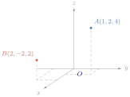
- ខ. សរសេរវ៉ិចទ័រ \(\displaystyle \vec{OA}\) និង \(\displaystyle \vec{OB}\) ជាអនុគមន៍នៃវ៉ិចទ័រឯកតា \(\displaystyle \vec{i}, \vec{j}\) និង \(\displaystyle \vec{k}\) តាមបម្រាប់ គេបាន \(\displaystyle \vec{OA}=\vec{i}+2\vec{j}+4\vec{k}\) និង \(\displaystyle \vec{OB}=2\vec{i}-2\vec{j}+2\vec{k}\) ។
- គេឱ្យបីចំណុច \(\displaystyle A(-2,3,-1)\), \(\displaystyle B(4,-7,5)\) និង \(\displaystyle C(3,-6,0)\) ។ សរសេរវ៉ិចទ័រ \(\displaystyle \vec{OA}\), \(\displaystyle \vec{OB}\) និង \(\displaystyle \vec{OC}\) ជាអនុគមន៍នៃវ៉ិចទ័រឯកតា \(\displaystyle \vec{i}, \vec{j}\) និង \(\displaystyle \vec{k}\) ។
- ដៅចំណុច \(\displaystyle P(2,4,5)\) និង \(\displaystyle Q\left(-\frac{3}{2}, -2, \frac{5}{2}\right)\) នៅក្នុងតម្រុយ \(\displaystyle (O, \vec{i}, \vec{j}, \vec{k})\) ។
- គេឱ្យបីវ៉ិចទ័រ \(\displaystyle \vec{OP}=-2\vec{i}+3\vec{j}-\vec{k}\), \(\displaystyle \vec{OM}=4\vec{i}-7\vec{j}+5\vec{k}\) និង \(\displaystyle \vec{OQ}=3\vec{i}-6\vec{j}+0\vec{k}\) ។ រកកូអរដោនេនៃចំណុច \(\displaystyle P, M\) និង \(\displaystyle Q\) ។
មើលចម្លើយ
- \(\displaystyle \vec{OA}=-2\vec{i}+3\vec{j}-\vec{k}\), \(\displaystyle \vec{OB}=4\vec{i}-7\vec{j}+5\vec{k}\), \(\displaystyle \vec{OC}=3\vec{i}-6\vec{j}+0\vec{k}\)
- 3. \(\displaystyle P(-2,3,-1)\), \(\displaystyle M(4,-7,5)\), \(\displaystyle Q(3,-6,0)\) ។
លក្ខណៈកូអរដោនេ
- ក.
បើ \(\displaystyle P(x,y,z)\) និង \(\displaystyle P'(x',y',z')\) ជាពីរចំណុចនៃលំហប្រកបដោយតម្រុយ \(\displaystyle (O, \vec{i}, \vec{j}, \vec{k})\) ។ គេបាន
- \(\displaystyle P=P'\) សមមូល \(\displaystyle x=x'\) និង \(\displaystyle y=y'\) និង \(\displaystyle z=z'\)
- \(\displaystyle P\neq P'\) សមមូល \(\displaystyle x\neq x'\) ឬ \(\displaystyle y\neq y'\) ឬ \(\displaystyle z\neq z'\)
- \(\displaystyle \vec{P'P}\) មានកូអរដោនេ \(\displaystyle (x-x', y-y', z-z')\) ។
- ចំណុចកណ្តាលនៃ \(\displaystyle PP'\) មានកូអរដោនេ \(\displaystyle \left(\frac{x+x'}{2}, \frac{y+y'}{2}, \frac{z+z'}{2}\right)\) ។
- ខ.
បើ \(\displaystyle \vec{u}(x,y,z)\) និង \(\displaystyle \vec{u}'(x',y',z')\) ជាពីរវ៉ិចទ័រក្នុងលំហប្រកបដោយគោល \(\displaystyle (\vec{i}, \vec{j}, \vec{k})\) ។ គេបាន
- \(\displaystyle \vec{u}=\vec{u}'\) សមមូល \(\displaystyle x=x'\) និង \(\displaystyle y=y'\) និង \(\displaystyle z=z'\) ។
- \(\displaystyle \vec{u}\neq\vec{u}'\) សមមូល \(\displaystyle x\neq x'\) ឬ \(\displaystyle y\neq y'\) ឬ \(\displaystyle z\neq z'\) ។
- វ៉ិចទ័រ \(\displaystyle (\vec{u}+\vec{u}')\) មានកូអរដោនេ \(\displaystyle (x+x', y+y', z+z')\) ។
- វ៉ិចទ័រ \(\displaystyle (\vec{u}-\vec{u}')\) មានកូអរដោនេ \(\displaystyle (x-x', y-y', z-z')\) ។
- \(\displaystyle \forall k \in \mathbb{R}\) វ៉ិចទ័រ \(\displaystyle k\vec{u}\) មានកូអរដោនេ \(\displaystyle (kx, ky, kz)\) ។
- \(\displaystyle \forall k, k' \in \mathbb{R}\) វ៉ិចទ័រ \(\displaystyle k\vec{u}+k'\vec{u}'\) មានកូអរដោនេ \(\displaystyle (kx+k'x', ky+k'y', kz+k'z')\) ។
គេឱ្យ \(\displaystyle \vec{a}=(1,-1,5)\), \(\displaystyle \vec{b}=(0,-1,6)\) និង \(\displaystyle \vec{c}=(3,-1,3)\) ។ គណនាកូអរដោនេនៃវ៉ិចទ័រ \(\displaystyle \vec{u}\) និង \(\displaystyle \vec{v}\) ដែល
- ក. \(\displaystyle \vec{u}=2\vec{a}-3\vec{b}\)
- ខ. \(\displaystyle \vec{v}=3(\vec{a}-\vec{b})-4(\vec{b}-3\vec{c})\) ។
- ក. \(\displaystyle \vec{u}=2\vec{a}-3\vec{b}\) នាំឱ្យ គេបាន \(\displaystyle \vec{u}=(2,-2,10)-(0,-3,18)=(2,1,-8)\)
ដូច្នេះ កូអរដោនេនៃ \(\displaystyle \vec{u}=(2,1,-8)\) ។ - ខ. \(\displaystyle \vec{v}=3(\vec{a}-\vec{b})-4(\vec{b}-3\vec{c})\) នាំឱ្យ គេបាន
\(\displaystyle \vec{v}=3\vec{a}-3\vec{b}-4\vec{b}+12\vec{c}=3\vec{a}-7\vec{b}+12\vec{c}\)
\(\displaystyle =(3,-3,15)-(0,-7,42)+(36,-12,36)\)
\(\displaystyle =(39,-8,9)\)
ដូច្នេះ កូអរដោនេនៃ \(\displaystyle \vec{v}=(39,-8,9)\) ។
ក្នុងលំហប្រកបដោយតម្រុយ \(\displaystyle (O, \vec{i}, \vec{j}, \vec{k})\) គេឱ្យចំណុច \(\displaystyle A(-1,2,3)\), \(\displaystyle B(1,-2,-1)\), \(\displaystyle C(0,-3,-4)\) ។
- ក. គណនាកូអរដោនេនៃ \(\displaystyle \vec{AB}\), \(\displaystyle \vec{BC}\), \(\displaystyle \vec{CA}\) ។
- ខ. រកកូអរដោនេចំណុចកណ្តាលនៃវ៉ិចទ័រទាំងបី ។
- ត្រីកោណ \(\displaystyle ABC\) មួយមានកំពូល \(\displaystyle A(2,-1,4)\), \(\displaystyle B(3,-2,5)\), \(\displaystyle C(-1,6,2)\) ។ ចូរសរសេរជាទម្រង់ \(\displaystyle a\vec{i}+b\vec{j}+c\vec{k}\) ចំពោះវ៉ិចទ័រ \(\displaystyle \vec{AB}\), \(\displaystyle \vec{BC}\), \(\displaystyle \vec{CA}\) ។
- ក. \(\displaystyle \vec{AB}=(2,-4,-4)\), \(\displaystyle \vec{BC}=(-1,-1,-3)\), \(\displaystyle \vec{CA}=(-1,5,7)\)
- ខ. \(\displaystyle (0,0,1)\), \(\displaystyle \left(\frac{1}{2}, -\frac{5}{2}, -\frac{5}{2}\right)\), \(\displaystyle \left(-\frac{1}{2}, -\frac{1}{2}, -\frac{1}{2}\right)\) ។
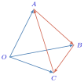
\(\displaystyle \vec{AB}=\vec{OB}-\vec{OA}=(3\vec{i}-2\vec{j}+5\vec{k})-(2\vec{i}-\vec{j}+4\vec{k})=\vec{i}-\vec{j}+\vec{k}\)
\(\displaystyle \vec{BC}=\vec{OC}-\vec{OB}=(-\vec{i}+6\vec{j}+2\vec{k})-(3\vec{i}-2\vec{j}+5\vec{k})=-4\vec{i}+8\vec{j}-3\vec{k}\)
\(\displaystyle \vec{CA}=\vec{OA}-\vec{OC}=(2\vec{i}-\vec{j}+4\vec{k})-(-\vec{i}+6\vec{j}+2\vec{k})=3\vec{i}-7\vec{j}+2\vec{k}\) ។
គេឱ្យ \(\displaystyle \vec{a}=(2,-3,0)\), \(\displaystyle \vec{b}=(-3,2,5)\) និង \(\displaystyle \vec{c}=(6,0,-3)\) ។ រកកូអរដោនេនៃវ៉ិចទ័រ \(\displaystyle \vec{u}\) និង \(\displaystyle \vec{v}\) ដែល
- ក. \(\displaystyle \vec{u}=3\vec{a}-4\vec{b}\)
- ខ. \(\displaystyle \vec{v}=2(\vec{a}+\vec{b})-3(\vec{b}-2\vec{c})\) ។
- បើកូអរដោនេនៃវ៉ិចទ័រ \(\displaystyle \vec{u}=(x,y,z)\) និង \(\displaystyle \vec{v}=(x',y',z')\) ខុសពីសូន្យ ។ បង្ហាញថា \(\displaystyle \vec{u} \parallel \vec{v} \iff \frac{x}{x'}=\frac{y}{y'}=\frac{z}{z'}\) ។
មើលចម្លើយ
- 1. ក. \(\displaystyle \vec{u}=(18,-17,-20)\) ខ. \(\displaystyle \vec{v}=(43,-8,-23)\)
- 2. ប្រើ \(\displaystyle \vec{u} \parallel \vec{v} \iff \vec{u}=t\vec{v}\) ។
D. ផលគុណស្កាលែនៃវ៉ិចទ័រក្នុងលំហ
និយមន័យ
ផលគុណស្កាលែនៃពីរវ៉ិចទ័រ \(\displaystyle \vec{u}\) និង \(\displaystyle \vec{v}\) ក្នុងលំហ គឺជាចំនួនពិត \(\displaystyle k\) មួយដែលកំណត់ដោយ៖
- \(\displaystyle k=\vec{u}\cdot\vec{v}=0\) បើ \(\displaystyle \vec{u}=\vec{0}\) ឬ \(\displaystyle \vec{v}=\vec{0}\) ។
- \(\displaystyle k=\vec{u}\cdot\vec{v}=|\vec{u}|\cdot|\vec{v}|\cos\theta\) បើ \(\displaystyle \vec{u}\neq\vec{0}\) និង \(\displaystyle \vec{v}\neq\vec{0}\) ហើយ \(\displaystyle \theta\) ជាមុំផ្គុំឡើងដោយវ៉ិចទ័រ \(\displaystyle \vec{u}\) និង \(\displaystyle \vec{v}\) ។
- គេឱ្យពីរវ៉ិចទ័រ \(\displaystyle \vec{u}\) និង \(\displaystyle \vec{v}\) ដែល \(\displaystyle |\vec{u}|=\frac{\sqrt{2}}{2}\), \(\displaystyle |\vec{v}|=\frac{\sqrt{2}}{2}\) និង \(\displaystyle \theta=90^{\circ}\) ដែល \(\displaystyle \theta\) ជាមុំផ្គុំឡើងដោយវ៉ិចទ័រ \(\displaystyle \vec{u}\) និង \(\displaystyle \vec{v}\) ។ គណនាផលគុណស្កាលែរវាង \(\displaystyle \vec{u}\) និង \(\displaystyle \vec{v}\) ។
- គេឱ្យពីរវ៉ិចទ័រ \(\displaystyle \vec{u}\) និង \(\displaystyle \vec{v}\) ដែល \(\displaystyle |\vec{u}|=\frac{\sqrt{3}}{2}\), \(\displaystyle |\vec{v}|=\sqrt{3}\) និង \(\displaystyle \theta=120^{\circ}\) ដែល \(\displaystyle \theta\) ជាមុំផ្គុំឡើងដោយវ៉ិចទ័រ \(\displaystyle \vec{u}\) និង \(\displaystyle \vec{v}\) ។ គណនាផលគុណស្កាលែរវាង \(\displaystyle \vec{u}\) និង \(\displaystyle \vec{v}\) ។
- \(\displaystyle \vec{u}\cdot\vec{v}=|\vec{u}|\times|\vec{v}|\cos\theta=\frac{\sqrt{2}}{2}\times\frac{\sqrt{2}}{2}\times\cos 90^{\circ}\) តែ \(\displaystyle \cos 90^{\circ}=0\)
\(\displaystyle \vec{u}\cdot\vec{v}=\frac{\sqrt{2}}{2}\times\frac{\sqrt{2}}{2}\times 0=0\) - \(\displaystyle \vec{u}\cdot\vec{v}=|\vec{u}|\times|\vec{v}|\cos\theta=\frac{\sqrt{3}}{2}\times\sqrt{3}\times\cos 120^{\circ}\)
តែ \(\displaystyle \cos 120^{\circ}=\cos(180^{\circ}-60^{\circ})=-\cos 60^{\circ}=-\frac{1}{2}\)
\(\displaystyle \vec{u}\cdot\vec{v}=\frac{\sqrt{3}}{2}\times\sqrt{3}\times\left(-\frac{1}{2}\right)=-\frac{3}{4}\) ។
គេឱ្យត្រីកោណសម័ង្ស \(\displaystyle ABC\) ដែលមានរង្វាស់ជ្រុងស្មើ \(\displaystyle a\) ។ គណនាជាអនុគមន៍នៃ \(\displaystyle a\) ចំពោះផលគុណស្កាលែដូចខាងក្រោម ៖
- ក. \(\displaystyle \vec{AB}\cdot\vec{AC}\)
- ខ. \(\displaystyle \vec{AB}\cdot\vec{BC}\) ។
មើលចម្លើយ
- ក. \(\displaystyle \vec{AB}\cdot\vec{AC}=\frac{1}{2}a^{2}\)
- ខ. \(\displaystyle \vec{AB}\cdot\vec{BC}=-\frac{1}{2}a^{2}\) ។
លក្ខណៈ
ផលគុណស្កាលែក្នុងលំហមានលក្ខណៈដូចផលគុណស្កាលែក្នុងប្លង់ដែរ ។ យើងសន្មតលក្ខណៈទាំងនេះដោយមិនបាច់ស្រាយបញ្ជាក់ ។
- ចំពោះបីចំណុច \(\displaystyle A, B, C\) ដែល \(\displaystyle A\neq B\) និង \(\displaystyle A\neq C\) គេបាន \(\displaystyle \vec{AB}\cdot\vec{AC}=|\vec{AB}|\cdot|\vec{AC}|\cos\theta\) ដែល \(\displaystyle \theta\) ជាមុំផ្គុំឡើងដោយវ៉ិចទ័រ \(\displaystyle \vec{AB}\) និង \(\displaystyle \vec{AC}\) ។
បើ \(\displaystyle H\) ជាចំណោលកែងនៃ \(\displaystyle C\) លើ \(\displaystyle AB\) គេបាន
- \(\displaystyle \vec{AB}\cdot\vec{AC}=|\vec{AB}|\cdot|\vec{AH}|\) បើ \(\displaystyle \vec{AB}\) និង \(\displaystyle \vec{AH}\) មានទិសដៅដូចគ្នា
- \(\displaystyle \vec{AB}\cdot\vec{AC}=-|\vec{AB}|\cdot|\vec{AH}|\) បើ \(\displaystyle \vec{AB}\) និង \(\displaystyle \vec{AH}\) មានទិសដៅផ្ទុយគ្នា ។
- ក. ចំពោះគ្រប់វ៉ិចទ័រ \(\displaystyle \vec{u}\) គេបាន \(\displaystyle \vec{u}\cdot\vec{u}=\vec{u}^{2}=|\vec{u}|^{2}\) ហៅថា ការេស្កាលែនៃវ៉ិចទ័រ \(\displaystyle \vec{u}\) ហើយ \(\displaystyle |\vec{u}|=\sqrt{\vec{u}\cdot\vec{u}}\) ហៅថា ណមនៃ \(\displaystyle \vec{u}\) ។
- ខ. ចំពោះគូ \(\displaystyle (A,B)\) គេបាន \(\displaystyle (\vec{AB})^{2}=AB^{2}\) ហើយ \(\displaystyle d(A,B)=AB=|\vec{AB}|\) ហៅថា ចម្ងាយពីចំណុច \(\displaystyle A\) ទៅ \(\displaystyle B\) ។
ចំពោះគ្រប់ \(\displaystyle \vec{u}, \vec{v}\) និងចំនួនពិត \(\displaystyle m\) មួយ គេបាន
- (1). \(\displaystyle \vec{u}\cdot\vec{v}=\vec{v}\cdot\vec{u}\)
- (2). \(\displaystyle \vec{u}\perp\vec{v}\) សមមូល \(\displaystyle \vec{u}\cdot\vec{v}=0 \quad (\vec{u}\neq\vec{0}, \vec{v}\neq\vec{0})\)
- (3). \(\displaystyle (m\vec{u})\cdot\vec{v}=m(\vec{u}\cdot\vec{v})=\vec{u}\cdot(m\vec{v})\)
- \(\displaystyle |\vec{u}\cdot\vec{v}|\le |\vec{u}|\cdot|\vec{v}|\) ហៅថា វិសមភាពកូស៊ី
- \(\displaystyle |\vec{u}+\vec{v}|\le |\vec{u}|+|\vec{v}|\) ហៅថា វិសមភាពត្រីកោណ ។
គេឱ្យចតុមុខ \(\displaystyle OABC\) មួយដែល \(\displaystyle \vec{OA}\cdot\vec{AC}=m\) និង \(\displaystyle \vec{OA}\cdot\vec{AB}=n\) ។ គណនាផលគុណស្កាលែ \(\displaystyle \vec{OA}\cdot\vec{CB}\) ជាអនុគមន៍នៃ \(\displaystyle m\) និង \(\displaystyle n\) ។
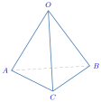
តាមរូប គេបាន \(\displaystyle \vec{CB}=\vec{AB}-\vec{AC}\)
គេឱ្យការេ \(\displaystyle MNOP\) ដែលជ្រុងមានរង្វាស់ស្មើ \(\displaystyle a\) និងកន្លះបន្ទាត់ \(\displaystyle MT\) ក្នុងលំហដែល \(\displaystyle \angle NMT=\angle PMT=60^{\circ}\) ។ \(\displaystyle M'\) ជាចំណុចមួយនៅលើ \(\displaystyle MT\) ដែល \(\displaystyle MM'=a\) ។
- ក. គណនាផលគុណស្កាលែ \(\displaystyle \vec{MN}\cdot\vec{MM'}\), \(\displaystyle \vec{MP}\cdot\vec{MM'}\) និង \(\displaystyle \vec{MO}\cdot\vec{MM'}\) ។
- ខ. ទាញរក \(\displaystyle \cos\angle OMT\) រួចរករង្វាស់មុំ \(\displaystyle \angle OMT\) គិតជាដឺក្រេ ។
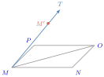
តាមរូប គេបាន
- ក. \(\displaystyle \vec{MN}\cdot\vec{MM'}=|\vec{MN}|\cdot|\vec{MM'}|\cos 60^{\circ}=a\cdot a\cdot\frac{1}{2}=\frac{1}{2}a^{2}\)
\(\displaystyle \vec{MP}\cdot\vec{MM'}=|\vec{MP}|\cdot|\vec{MM'}|\cos 60^{\circ}=a\cdot a\cdot\frac{1}{2}=\frac{1}{2}a^{2}\)
\(\displaystyle \vec{MO}\cdot\vec{MM'}=(\vec{MN}+\vec{MP})\cdot\vec{MM'}=\vec{MN}\cdot\vec{MM'}+\vec{MP}\cdot\vec{MM'}=\frac{1}{2}a^{2}+\frac{1}{2}a^{2}=a^{2}\) ។ - ខ. ដោយ \(\displaystyle \vec{MO}\cdot\vec{MM'}=|\vec{MO}|\cdot|\vec{MM'}|\cos\angle OMT \implies \cos\angle OMT=\frac{\vec{MO}\cdot\vec{MM'}}{|\vec{MO}|\cdot|\vec{MM'}|}\)
តែ \(\displaystyle \vec{MO}\cdot\vec{MM'}=a^{2}\), \(\displaystyle |\vec{MM'}|=a\) និង \(\displaystyle |\vec{MO}|=a\sqrt{2}\)
នោះគេបាន \(\displaystyle \cos\angle OMT=\frac{a^{2}}{a\sqrt{2}\cdot a}=\frac{1}{\sqrt{2}}=\frac{\sqrt{2}}{2}\)
ដូច្នេះ \(\displaystyle \cos\angle OMT=\frac{\sqrt{2}}{2}\) ។
ដោយ \(\displaystyle \cos\angle OMT=\frac{\sqrt{2}}{2}=\cos 45^{\circ} \implies \angle OMT=45^{\circ}\) ។
គេឱ្យគូបមួយមានជ្រុង \(\displaystyle a\) ដូចរូបខាងស្តាំ ។ រកផលគុណស្កាលែនៃវ៉ិចទ័រខាងក្រោម ៖
- ក. \(\displaystyle \vec{AB}\cdot\vec{AF}\)
- ខ. \(\displaystyle \vec{AF}\cdot\vec{BG}\)
- គ. \(\displaystyle \vec{BG}\cdot\vec{DE}\)
- ឃ. \(\displaystyle \vec{DE}\cdot\vec{FC}\) ។
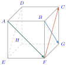
មើលចម្លើយ
- ក. \(\displaystyle a^{2}\)
- ខ. \(\displaystyle a^{2}\)
- គ. \(\displaystyle 0\)
- ឃ. \(\displaystyle -2a^{2}\) ។
E. ផលគុណស្កាលែនិងការតាងកូអរដោនេ
កន្សោមវិភាគផលគុណស្កាលែក្នុងគោលអរតូកូណាល់
ឧទាហរណ៍ : ក្នុងគោលអរតូណរម៉ាល់ \(\displaystyle (\vec{i}, \vec{j}, \vec{k})\) មានវ៉ិចទ័រពីរ \(\displaystyle \vec{u}=x\vec{i}+y\vec{j}+z\vec{k}\) និង \(\displaystyle \vec{v}=x'\vec{i}+y'\vec{j}+z'\vec{k}\) ។ គណនាផលគុណស្កាលែរវាងវ៉ិចទ័រ \(\displaystyle \vec{u}\) និង \(\displaystyle \vec{v}\) ។
ដំណោះស្រាយ គេបាន
ដោយ \(\displaystyle \vec{i}^{2}=\vec{j}^{2}=\vec{k}^{2}=1\) និង \(\displaystyle \vec{i}\cdot\vec{j}=\vec{j}\cdot\vec{k}=\vec{k}\cdot\vec{i}=0\) ដូច្នេះ \(\displaystyle \vec{u}\cdot\vec{v}=xx'+yy'+zz'\) ។
ទ្រឹស្តីបទ ក្នុងគោលអរតូណរម៉ាល់នៃលំហ ផលគុណស្កាលែនៃពីរវ៉ិចទ័រ \(\displaystyle \vec{u}=(x,y,z)\) និង \(\displaystyle \vec{v}=(x',y',z')\) គឺ \(\displaystyle \vec{u}\cdot\vec{v}=xx'+yy'+zz'\) ។
\(\displaystyle \vec{u}\cdot\vec{i}=x\), \(\displaystyle \vec{u}\cdot\vec{j}=y\), \(\displaystyle \vec{u}\cdot\vec{k}=z\) ។
កូរ៉ូលែ ចំពោះគ្រប់វ៉ិចទ័រ \(\displaystyle \vec{u}=(x,y,z)\) ក្នុងគោលអរតូណរម៉ាល់ \(\displaystyle (\vec{i}, \vec{j}, \vec{k})\) គេបាន
- ក. ពីរវ៉ិចទ័រ \(\displaystyle \vec{u}=(x,y,z)\) និង \(\displaystyle \vec{v}=(x',y',z')\) អរតូកូណាល់គ្នា លុះត្រាតែ \(\displaystyle \vec{u}\cdot\vec{v}=0\) សមមូល \(\displaystyle xx'+yy'+zz'=0\)
- ខ. ការេស្កាលែ និងណម នៃវ៉ិចទ័រ \(\displaystyle \vec{u}=(x,y,z)\) កំណត់ដោយ \(\displaystyle \vec{u}^{2}=x^{2}+y^{2}+z^{2}\) និង \(\displaystyle |\vec{u}|=\sqrt{x^{2}+y^{2}+z^{2}}\) ។
- គ.
ផលគុណស្កាលែនៃពីរវ៉ិចទ័រមិនសូន្យ \(\displaystyle \vec{u}, \vec{v}\) និងមុំ \(\displaystyle \theta\) (គិតជារ៉ាដ្យង់) កំណត់ដោយ
\[\vec{u}\cdot\vec{v}=|\vec{u}|\cdot|\vec{v}|\cos\theta \text{ នាំឱ្យ } \cos\theta=\frac{\vec{u}\cdot\vec{v}}{|\vec{u}|\cdot|\vec{v}|}=\frac{xx'+yy'+zz'}{\sqrt{x^{2}+y^{2}+z^{2}}\sqrt{x'^{2}+y'^{2}+z'^{2}}} \text{ ។}\]
គណនា \(\displaystyle |\vec{u}|\), \(\displaystyle |\vec{v}|\), \(\displaystyle \vec{u}\cdot\vec{v}\), \(\displaystyle \cos\theta\) និង \(\displaystyle \theta\) (ជាមុំផ្គុំឡើងដោយវ៉ិចទ័រ \(\displaystyle \vec{u}\) និង \(\displaystyle \vec{v}\)) នៃគូវ៉ិចទ័រខាងក្រោម៖
- ក. \(\displaystyle \vec{u}=(3,-1,2)\), \(\displaystyle \vec{v}=(1,-1,-2)\)
- ខ. \(\displaystyle \vec{u}=(-4,0,2)\), \(\displaystyle \vec{v}=(2,0,-1)\) ។
- ក. \(\displaystyle |\vec{u}|=\sqrt{3^{2}+(-1)^{2}+2^{2}}=\sqrt{14}\), \(\displaystyle |\vec{v}|=\sqrt{1^{2}+(-1)^{2}+(-2)^{2}}=\sqrt{6}\)
\(\displaystyle \vec{u}\cdot\vec{v}=3\cdot 1+(-1)(-1)+(2)(-2)=3+1-4=0\)
\(\displaystyle \cos\theta=\frac{\vec{u}\cdot\vec{v}}{|\vec{u}||\vec{v}|}=\frac{0}{\sqrt{14}\sqrt{6}}=\frac{0}{\sqrt{84}}=0 \implies \theta=\frac{\pi}{2}\) - ខ. \(\displaystyle |\vec{u}|=\sqrt{(-4)^{2}+0^{2}+2^{2}}=2\sqrt{5}\), \(\displaystyle |\vec{v}|=\sqrt{2^{2}+0^{2}+(-1)^{2}}=\sqrt{5}\)
\(\displaystyle \vec{u}\cdot\vec{v}=(-4)(2)+(0)(0)+(2)(-1)=-8-2=-10\)
\(\displaystyle \cos\theta=\frac{\vec{u}\cdot\vec{v}}{|\vec{u}||\vec{v}|}=\frac{-10}{\sqrt{20}\sqrt{5}}=\frac{-10}{\sqrt{100}}=-1 \implies \theta=\pi\) ។
រកផលគុណស្កាលែនៃគូវ៉ិចទ័រខាងក្រោម៖
- ក. \(\displaystyle \vec{u}=(-2,2,3)\), \(\displaystyle \vec{v}=(4,5,6)\)
- ខ. \(\displaystyle \vec{u}=(4\vec{i}+3\vec{j}-\vec{k})\), \(\displaystyle \vec{v}=(-2\vec{i}+\vec{j}+3\vec{k})\)
- គ. \(\displaystyle \vec{a}=(1,1,2)\), \(\displaystyle \vec{b}=(2,-1,1)\)
- ឃ. \(\displaystyle \vec{a}=(1,-1,4)\), \(\displaystyle \vec{b}=(2,1,2)\) ។
- បើ \(\displaystyle \vec{AB}=\vec{a}\), \(\displaystyle \vec{AC}=\vec{b}\) ជាជ្រុងនៃត្រីកោណ \(\displaystyle ABC\) ។ បង្ហាញថា ផ្ទៃក្រឡាត្រីកោណ \(\displaystyle A\) គឺ \(\displaystyle \mathcal{A}=\frac{1}{2}\sqrt{|\vec{a}|^{2}|\vec{b}|^{2}-(\vec{a}\cdot\vec{b})^{2}}\) ។
មើលចម្លើយ
- ក. \(\displaystyle 20\) ខ. \(\displaystyle -8\) គ. \(\displaystyle 3\) ឃ. \(\displaystyle 9\) ។
- ប្រើរូបមន្ត \(\displaystyle \mathcal{A}=\frac{1}{2}AB\cdot AC\sin A\) ។
លក្ខណៈផលគុណស្កាលែនៃវ៉ិចទ័រក្នុងលំហ
- \(\displaystyle \vec{u}\cdot(\vec{v}+\vec{w})=\vec{u}\cdot\vec{v}+\vec{u}\cdot\vec{w}\)
- \(\displaystyle (\vec{u}+\vec{v})\cdot\vec{w}=\vec{u}\cdot\vec{w}+\vec{v}\cdot\vec{w}\)
- \(\displaystyle \vec{u}\cdot(m\vec{v})=m(\vec{u}\cdot\vec{v})\)
- \(\displaystyle (m\vec{u})\cdot\vec{v}=m(\vec{u}\cdot\vec{v})\) ។
សម្រាយបញ្ជាក់ សន្មតថាកូអរដោនេនៃវ៉ិចទ័រ \(\displaystyle \vec{u}, \vec{v}\) និង \(\displaystyle \vec{w}\) គឺ \(\displaystyle \vec{u}=(u_{1},u_{2},u_{3})\), \(\displaystyle \vec{v}=(v_{1},v_{2},v_{3})\), \(\displaystyle \vec{w}=(w_{1},w_{2},w_{3})\)
\(\displaystyle \vec{u}\cdot(\vec{v}+\vec{w})=\vec{u}\cdot\vec{v}+\vec{u}\cdot\vec{w}\)
គេមាន \(\displaystyle \vec{v}+\vec{w}=(v_{1}+w_{1}, v_{2}+w_{2}, v_{3}+w_{3})\)
នាំឱ្យ\[\begin{aligned} \vec{u}\cdot(\vec{v}+\vec{w}) &= u_{1}(v_{1}+w_{1})+u_{2}(v_{2}+w_{2})+u_{3}(v_{3}+w_{3}) \\ &= (u_{1}v_{1}+u_{2}v_{2}+u_{3}v_{3})+(u_{1}w_{1}+u_{2}w_{2}+u_{3}w_{3}) \\ &= \vec{u}\cdot\vec{v}+\vec{u}\cdot\vec{w} \text{ ។} \end{aligned}\]\(\displaystyle (\vec{u}+\vec{v})\cdot\vec{w}=\vec{u}\cdot\vec{w}+\vec{v}\cdot\vec{w}\)
\[\begin{aligned} (\vec{u}+\vec{v})\cdot\vec{w} &= (u_{1}+v_{1})w_{1}+(u_{2}+v_{2})w_{2}+(u_{3}+v_{3})w_{3} \\ &= (u_{1}w_{1}+u_{2}w_{2}+u_{3}w_{3})+(v_{1}w_{1}+v_{2}w_{2}+v_{3}w_{3}) \\ &= \vec{u}\cdot\vec{w}+\vec{v}\cdot\vec{w} \text{ ។} \end{aligned}\]\(\displaystyle \vec{u}\cdot(m\vec{v})=m(\vec{u}\cdot\vec{v})\)
ដោយ \(\displaystyle \vec{u}=(u_{1},u_{2},u_{3})\) នោះ \(\displaystyle m\vec{v}=(mv_{1}, mv_{2}, mv_{3})\)
គេបាន\[\begin{aligned} \vec{u}\cdot(m\vec{v}) &= (u_{1}mv_{1}+u_{2}mv_{2}+u_{3}mv_{3}) \\ &= [m(u_{1}v_{1})+m(u_{2}v_{2})+m(u_{3}v_{3})] \\ &= m(u_{1}v_{1}+u_{2}v_{2}+u_{3}v_{3}) \\ &= m(\vec{u}\cdot\vec{v}) \text{ ។} \end{aligned}\]- ដូចគ្នាដែរ គេបាន \(\displaystyle (m\vec{u})\cdot\vec{v}=m(\vec{u}\cdot\vec{v})\) ។
គេឱ្យ \(\displaystyle \vec{u}=(1,-1,2)\) និង \(\displaystyle \vec{v}=(-1,-2,1)\) ។ កំណត់តម្លៃនៃចំនួនពិត \(\displaystyle l\) ដែល \(\displaystyle \vec{u}-l\vec{v}\) និង \(\displaystyle \vec{u}\) កែងគ្នា ។
កំណត់តម្លៃនៃចំនួនពិត \(\displaystyle l\) ដោយ \(\displaystyle \vec{u}-l\vec{v}=(1+l, 2l-1, 2-l)\) ។ តែ \(\displaystyle \vec{u}-l\vec{v}\) និង \(\displaystyle \vec{u}\) កែងគ្នា នោះ \(\displaystyle (\vec{u}-l\vec{v})\cdot\vec{u}=0\) នាំឱ្យ គេបាន
តែ \(\displaystyle (\vec{u}-l\vec{v})\cdot\vec{u}=0 \iff -3l+6=0 \implies l=2\) ដូច្នេះ \(\displaystyle l=2\) ។
ក្នុងតម្រុយអរតូណរម៉ាល់ \(\displaystyle (O, \vec{i}, \vec{j}, \vec{k})\) គេឱ្យបីចំណុច \(\displaystyle A(1,4,2)\), \(\displaystyle B(2,1,3)\), \(\displaystyle C(-2,2,-1)\) ។ ចូរបង្ហាញថា \(\displaystyle \vec{AC}\perp\vec{AB}\) ។
តាមបម្រាប់ គេបាន \(\displaystyle \vec{AB}=(2-1, 1-4, 3-2)=(1,-3,1)\) \(\displaystyle \vec{AC}=(-2-1, 2-4, -1-2)=(-3,-2,-3)\) ដោយ \(\displaystyle \vec{AB}\cdot\vec{AC}=(1)(-3)+(-3)(-2)+(1)(-3)=-3+6-3=0 \implies \vec{AB}\perp\vec{AC}\) ដូច្នេះ \(\displaystyle \vec{AC}\perp\vec{AB}\) ។
- គេឱ្យ \(\displaystyle \vec{u}=(2,-1,4)\) និង \(\displaystyle \vec{v}=(-4,5,3)\) ។ កំណត់តម្លៃនៃចំនួនពិត \(\displaystyle k\) ដែល \(\displaystyle \vec{u}-k\vec{v}\) និង \(\displaystyle \vec{u}\) កែងគ្នា ។
- គេឱ្យគូប \(\displaystyle ABCD-EFGH\) ហើយចំណុច \(\displaystyle L, M\) និង \(\displaystyle N\) ជាចំណុចកណ្តាលនៃជ្រុង \(\displaystyle EF, FG\) និង \(\displaystyle GC\) ។ ចូរកំណត់មុំ \(\displaystyle \angle LMN=\theta\) ។
ក្នុងតម្រុយអរតូណរម៉ាល់ \(\displaystyle (O, \vec{i}, \vec{j}, \vec{k})\) គេឱ្យបីចំណុច \(\displaystyle A(2,1,0)\), \(\displaystyle B(0,2,1)\), \(\displaystyle C(0,-1,4)\) ។
- ក. គណនាផលគុណស្កាលែ \(\displaystyle \vec{AB}\cdot\vec{AC}\) ។
- ខ. គណនាមុំ \(\displaystyle \theta\) ជាមុំដែលផ្តុំឡើងដោយ \(\displaystyle \vec{AB}\) និង \(\displaystyle \vec{AC}\) ។
មើលចម្លើយ
- \(\displaystyle k=-21\)
- \(\displaystyle \theta=135^{\circ}\)
- ក. \(\displaystyle \vec{AB}\cdot\vec{AC}=6\) ខ. \(\displaystyle \theta=60^{\circ}\) ។
ចម្ងាយរវាងពីរចំណុចនៅក្នុងលំហ
គេឱ្យចំណុច \(\displaystyle P(x,y,z)\) នៅក្នុងតម្រុយអរតូណរម៉ាល់ \(\displaystyle (O, \vec{i}, \vec{j}, \vec{k})\) ។ គូសបន្ទាត់ \(\displaystyle PH\) ឱ្យកែងទៅនឹងប្លង់ \(\displaystyle (xOy)\) នោះកូអរដោនេនៃ \(\displaystyle H\) គឺ \(\displaystyle (x,y,0)\) ។ ដូច្នេះ គេបាន \(\displaystyle OH^{2}=x^{2}+y^{2}\) ។ ដោយ \(\displaystyle \triangle POH\) ជាត្រីកោណកែងត្រង់ \(\displaystyle H\) នោះគេបាន \(\displaystyle OP^{2}=OH^{2}+PH^{2}=x^{2}+y^{2}+z^{2}\) ។ ដូច្នេះ \(\displaystyle OP=\sqrt{x^{2}+y^{2}+z^{2}}\) ។
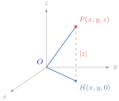
បើឱ្យពីរចំណុច \(\displaystyle P(x_{1},y_{1},z_{1})\) និង \(\displaystyle Q(x_{2},y_{2},z_{2})\) នៅក្នុងតម្រុយអរតូណរម៉ាល់ \(\displaystyle (O, \vec{i}, \vec{j}, \vec{k})\) ។ នោះវ៉ិចទ័រ \(\displaystyle \vec{PQ}\) មានកូអរដោនេ \(\displaystyle (x_{2}-x_{1}, y_{2}-y_{1}, z_{2}-z_{1})\) ។ គេបាន \(\displaystyle PQ=|\vec{PQ}|=\sqrt{(x_{2}-x_{1})^{2}+(y_{2}-y_{1})^{2}+(z_{2}-z_{1})^{2}}\) ដូច្នេះ ចម្ងាយរវាងចំណុច \(\displaystyle P\) និង \(\displaystyle Q\) កំណត់ដោយ
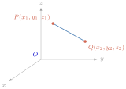
រកចម្ងាយរវាងគូចំណុចខាងក្រោម៖
- ក. \(\displaystyle Q(1,2,3)\), \(\displaystyle P(3,4,5)\)
- ខ. \(\displaystyle A(-1,-2,-5)\), \(\displaystyle B(-3,-4,-5)\) ។
- ក.
យក \(\displaystyle d\) ជាចម្ងាយរវាងពីរចំណុច \(\displaystyle Q(1,2,3)\), \(\displaystyle P(3,4,5)\) នោះគេបាន
\[d(Q,P)=PQ=\sqrt{(3-1)^{2}+(4-2)^{2}+(5-3)^{2}}=\sqrt{4+4+4}=\sqrt{12}=2\sqrt{3} \text{ ។}\] - ខ. \(\displaystyle d(A,B)=AB=\sqrt{(-3+1)^{2}+(-4+2)^{2}+(-5+5)^{2}}=\sqrt{4+4+0}=\sqrt{8}=2\sqrt{2}\) ។
ក្នុងតម្រុយអរតូណរម៉ាល់ \(\displaystyle (O, \vec{i}, \vec{j}, \vec{k})\) គេមានចំណុច \(\displaystyle M(3,1,5)\), \(\displaystyle N(3,5,1)\) និង \(\displaystyle P(-1,5,5)\) ។
- ក. គណនា \(\displaystyle MN, MP\) និង \(\displaystyle \cos\theta\) ដែល \(\displaystyle \theta\) ជាមុំផ្គុំឡើងដោយវ៉ិចទ័រ \(\displaystyle \vec{MN}\) និង \(\displaystyle \vec{MP}\) ។
- ខ. តើគេអាចថាយ៉ាងណាចំពោះត្រីកោណ \(\displaystyle MNP\) ។
- ក. តាមបម្រាប់ គេបាន \(\displaystyle MN=\sqrt{(3-3)^{2}+(5-1)^{2}+(1-5)^{2}}=\sqrt{32}=4\sqrt{2}\)
\(\displaystyle MP=\sqrt{(-1-3)^{2}+(5-1)^{2}+(5-5)^{2}}=\sqrt{32}=4\sqrt{2}\)
ដោយ \(\displaystyle \vec{MN}=(0,4,-4)\) និង \(\displaystyle \vec{MP}=(-4,4,0)\) នោះគេបាន
\(\displaystyle \vec{MN}\cdot\vec{MP}=(0)(-4)+4\times 4+(-4)(0)=16\) ។
ដូច្នេះ \(\displaystyle \cos\theta=\frac{\vec{MN}\cdot\vec{MP}}{|\vec{MN}|\cdot|\vec{MP}|}=\frac{16}{\sqrt{32}\times\sqrt{32}}=\frac{16}{32}=\frac{1}{2} \implies \theta=\frac{\pi}{3}\) ។ - ខ. ដោយ \(\displaystyle MN=MP\) និង \(\displaystyle (\vec{MN}, \vec{MP})=\frac{\pi}{3}\) នោះ \(\displaystyle MNP\) ជាត្រីកោណសម័ង្ស ។
រកចម្ងាយរវាងគូចំណុចខាងក្រោម៖
- ក. \(\displaystyle A(3,-2,4)\), \(\displaystyle B(2,0,3)\)
- ខ. \(\displaystyle A(0,2,3)\), \(\displaystyle B(-4,0,1)\) ។
មើលចម្លើយ
- ក. \(\displaystyle \sqrt{6}\) ឯកតាប្រវែង
- ខ. \(\displaystyle 2\sqrt{6}\) ឯកតាប្រវែង ។
F. ទិសដៅកូស៊ីនុស
គេឱ្យវ៉ិចទ័រ \(\displaystyle \vec{u}=(x,y,z)\) មួយ និងចំណុច \(\displaystyle P\) នៅក្នុងលំហដែល \(\displaystyle \vec{u}=\vec{OP}\) ។ យក \(\displaystyle \alpha, \beta\) និង \(\displaystyle \gamma\) ជាមុំដែលកើតឡើងដោយ \(\displaystyle \vec{OP}\) ជាមួយនិងអ័ក្ស \(\displaystyle (Ox)\) អ័ក្ស \(\displaystyle (Oy)\) និងអ័ក្ស \(\displaystyle (Oz)\) រៀងគ្នា ដូចរូបខាងស្តាំ ។ តាមទំនាក់ទំនងមាត្រក្នុងត្រីកោណកែង គេបាន
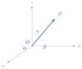
គេបាន
នាំឱ្យ \(\displaystyle \cos^{2}\alpha+\cos^{2}\beta+\cos^{2}\gamma=\frac{|\vec{OP}|^{2}}{|\vec{OP}|^{2}}=1\) ដូច្នេះ \(\displaystyle \cos^{2}\alpha+\cos^{2}\beta+\cos^{2}\gamma=1\) ។ តម្លៃ \(\displaystyle \cos\alpha, \cos\beta\) និង \(\displaystyle \cos\gamma\) នេះ គឺបញ្ជាក់ពី ទិសដៅកូស៊ីនុស នៃវ៉ិចទ័រ \(\displaystyle \vec{u}=\vec{OP}\) ។
គេឱ្យកូអរដោនេនៃចំណុច \(\displaystyle P\) គឺ \(\displaystyle (-2,6,9)\) ។
- ក. រកទិសដៅកូស៊ីនុសនៃ \(\displaystyle \vec{OP}\) ។
- ខ. បង្ហាញថា \(\displaystyle \cos^{2}\alpha+\cos^{2}\beta+\cos^{2}\gamma=1\) ។
គេឱ្យកូអរដោនេនៃចំណុច \(\displaystyle M\) គឺ \(\displaystyle (2,3,-6)\) ។
- ក. រកទិសដៅកូស៊ីនុសនៃ \(\displaystyle \vec{OM}\) ។
- ខ. បង្ហាញថា \(\displaystyle \cos^{2}\alpha+\cos^{2}\beta+\cos^{2}\gamma=1\) ។
- ក. រកទិសដៅកូស៊ីនុសនៃ \(\displaystyle \vec{OP}\)
គេមាន \(\displaystyle |\vec{OP}|=\sqrt{(-2)^{2}+6^{2}+9^{2}}=11\)
ដោយ \(\displaystyle x=|\vec{OP}|\cos\alpha \implies \cos\alpha=\frac{x}{|\vec{OP}|}=\frac{-2}{11}\)
\(\displaystyle y=|\vec{OP}|\cos\beta \implies \cos\beta=\frac{y}{|\vec{OP}|}=\frac{6}{11}\)
\(\displaystyle z=|\vec{OP}|\cos\gamma \implies \cos\gamma=\frac{z}{|\vec{OP}|}=\frac{9}{11}\) ។ - ខ. បង្ហាញ \(\displaystyle \cos^{2}\alpha+\cos^{2}\beta+\cos^{2}\gamma=1\)
ដោយ \(\displaystyle \cos\alpha=\frac{-2}{11} \implies \cos^{2}\alpha=\frac{4}{121}\)
\(\displaystyle \cos\beta=\frac{6}{11} \implies \cos^{2}\beta=\frac{36}{121}\) និង \(\displaystyle \cos\gamma=\frac{9}{11} \implies \cos^{2}\gamma=\frac{81}{121}\)
\(\displaystyle \cos^{2}\alpha+\cos^{2}\beta+\cos^{2}\gamma=\frac{4}{121}+\frac{36}{121}+\frac{81}{121}=\frac{121}{121}=1\)
ដូច្នេះ \(\displaystyle \cos^{2}\alpha+\cos^{2}\beta+\cos^{2}\gamma=1\) ។
- ក. រកទិសដៅកូស៊ីនុសនៃ \(\displaystyle \vec{OP}\)
- ក. \(\displaystyle |\vec{OM}|=\sqrt{(2)^{2}+3^{2}+(-6)^{2}}=7\) ដោយ \(\displaystyle M(2,3,-6)\)
ដោយ \(\displaystyle x=|\vec{OM}|\cos\alpha \implies \cos\alpha=\frac{x}{|\vec{OM}|}=\frac{2}{7}\)
\(\displaystyle y=|\vec{OM}|\cos\beta \implies \cos\beta=\frac{y}{|\vec{OM}|}=\frac{3}{7}\)
\(\displaystyle z=|\vec{OM}|\cos\gamma \implies \cos\gamma=\frac{z}{|\vec{OM}|}=\frac{-6}{7}\) ។ - ខ. \(\displaystyle \cos^{2}\alpha+\cos^{2}\beta+\cos^{2}\gamma=\frac{4}{49}+\frac{9}{49}+\frac{36}{49}=\frac{49}{49}=1\)
ដូច្នេះ \(\displaystyle \cos^{2}\alpha+\cos^{2}\beta+\cos^{2}\gamma=1\) ។
- ក. \(\displaystyle |\vec{OM}|=\sqrt{(2)^{2}+3^{2}+(-6)^{2}}=7\) ដោយ \(\displaystyle M(2,3,-6)\)
គេឱ្យកូអរដោនេនៃចំណុច \(\displaystyle Q\) គឺ \(\displaystyle (3,4,5)\) ។
- ក. រកទិសដៅកូស៊ីនុសនៃ \(\displaystyle \vec{OQ}\) ។
- ខ. បង្ហាញ \(\displaystyle \cos^{2}\alpha+\cos^{2}\beta+\cos^{2}\gamma=1\) ។
គេឱ្យវ៉ិចទ័រ \(\displaystyle \vec{b}=2\vec{i}+3\vec{j}+4\vec{k}\) ។ ចូររក
- ក. ទិសដៅកូស៊ីនុសនៃវ៉ិចទ័រ \(\displaystyle \vec{b}\) ។
- ខ. បង្ហាញថា \(\displaystyle \cos^{2}\alpha+\cos^{2}\beta+\cos^{2}\gamma=1\) ។
មើលចម្លើយ
- ក. \(\displaystyle \cos\alpha=\frac{3\sqrt{2}}{10}, \cos\beta=\frac{2\sqrt{2}}{5}, \cos\gamma=\frac{\sqrt{2}}{2}\)
- ក. \(\displaystyle \cos\alpha=\frac{2\sqrt{29}}{29}, \cos\beta=\frac{3\sqrt{29}}{29}, \cos\gamma=\frac{4\sqrt{29}}{29}\) ។
លំហាត់
គេឱ្យ \(\displaystyle \vec{u}=(4,-2,5)\) និង \(\displaystyle \vec{v}=(7,9,-8)\) ។ រកវ៉ិចទ័រ \(\displaystyle \vec{x}\) ដែលផ្ទៀងផ្ទាត់ទំនាក់ទំនងខាងក្រោម ៖
- ក. \(\displaystyle 2\vec{u}+\vec{x}=3\vec{v}\)
- ខ. \(\displaystyle 4\vec{x}-\vec{u}=3\vec{u}-4\vec{v}+2\vec{x}\) ។
- គេឱ្យ \(\displaystyle \vec{u}=(1,1,0)\), \(\displaystyle \vec{v}=(1,0,1)\), \(\displaystyle \vec{w}=(0,1,1)\) និង \(\displaystyle \vec{p}=(5,6,7)\) ។ បង្ហាញ \(\displaystyle \vec{p}\) ជាទម្រង់ \(\displaystyle \vec{p}=l\vec{u}+m\vec{v}+n\vec{w}\) ។
រកទិសដៅកូស៊ីនុសនៃវ៉ិចទ័រខាងក្រោម ៖
- ក. \(\displaystyle \vec{u}=(3,-4,5)\)
- ខ. \(\displaystyle \vec{v}=(-3,2,2\sqrt{3})\) ។
គេឱ្យវ៉ិចទ័រ \(\displaystyle \vec{u}=(2,-1,5)\), \(\displaystyle \vec{v}=(3x,5,4y-2)\) និង \(\displaystyle \vec{w}=(z-1,2,z+1)\) ។
- ក. រកតម្លៃ \(\displaystyle x\) និង \(\displaystyle y\) ដែល \(\displaystyle \vec{u}\perp\vec{v}\) ។
- ខ. រកតម្លៃ \(\displaystyle z\) ដែល \(\displaystyle \vec{u}\perp\vec{w}\) ។
- រកតម្លៃ \(\displaystyle x, y\) និង \(\displaystyle z\) ដែលវ៉ិចទ័រ \(\displaystyle \vec{u}=(x,4,6)\), \(\displaystyle \vec{v}=(2,y,6)\) និង \(\displaystyle \vec{w}=(2,4,z)\) កែងគ្នា ។
- គេឱ្យ \(\displaystyle \vec{u}=(1,2,-3)\), \(\displaystyle \vec{v}=(2,-1,-2)\) និង \(\displaystyle \vec{w}=(1,-3,1)\) ។ បើវ៉ិចទ័រ \(\displaystyle \vec{x}=(x_{1},x_{2},x_{3})\) អរតូកូណាល់ទៅនឹងវ៉ិចទ័រ \(\displaystyle \vec{u}\), \(\displaystyle \vec{v}\) និង \(\displaystyle \vec{w}\) ។ រក \(\displaystyle x_{1} : x_{2} : x_{3}\) ដែល \(\displaystyle \vec{x}\neq\vec{0}\) ។
- គេឱ្យ \(\displaystyle \vec{u}=(2,-2,1)\) និង \(\displaystyle \vec{v}=(2,3,-4)\) ។ តាង \(\displaystyle \vec{v}-k\vec{u}=\vec{w}\) ដែល \(\displaystyle k\) ជាចំនួនពិត ។ បើ \(\displaystyle \vec{u}\) និង \(\displaystyle \vec{w}\) កែងគ្នា ។ កំណត់តម្លៃ \(\displaystyle k\) និង \(\displaystyle \vec{w}\) ។
- គេឱ្យចំណុច \(\displaystyle A(0,3,0)\), \(\displaystyle B(0,1,-2)\) និង \(\displaystyle C(2,3,-2)\) ។ តើ \(\displaystyle \triangle ABC\) ជាប្រភេទត្រីកោណអ្វី ?
\(\displaystyle (\vec{i}, \vec{j}, \vec{k})\) ជាគោលអរតូណរម៉ាល់មួយ ។ គណនា \(\displaystyle \vec{u}\cdot\vec{v}\), \(\displaystyle \vec{v}\cdot\vec{w}\), \(\displaystyle \vec{w}\cdot\vec{u}\) ក្នុងករណីនីមួយៗខាងក្រោម ៖
- ក. \(\displaystyle \vec{u}=(1+\sqrt{2})\vec{i}+\sqrt{3}\vec{j}\), \(\displaystyle \vec{v}=(1-\sqrt{2})\vec{i}-\vec{k}\), \(\displaystyle \vec{w}=\sqrt{3}\vec{j}+\vec{k}\) ។
- ខ. \(\displaystyle \vec{u}=\frac{2}{3}\vec{i}-\frac{1}{6}\vec{j}+\frac{1}{2}\vec{k}\), \(\displaystyle \vec{v}=\frac{1}{2}\vec{i}-2\vec{j}+\frac{2}{5}\vec{k}\), \(\displaystyle \vec{w}=\vec{i}+\vec{j}+\vec{k}\) ។
\(\displaystyle SABCD\) ជាពីរ៉ាមីតដែលមានបាតជាការេមានកំពូល \(\displaystyle S\) និងទ្រនុងមានរង្វាស់ \(\displaystyle a\) ស្មើគ្នាទាំងអស់ ។ គណនាផលគុណស្កាលែខាងក្រោមនេះជាអនុគមន៍នៃ \(\displaystyle a\) ។
- ក. \(\displaystyle \vec{SA}\cdot\vec{SB}\)
- ខ. \(\displaystyle \vec{SA}\cdot\vec{SC}\)
- គ. \(\displaystyle \vec{SA}\cdot\vec{AC}\) ។
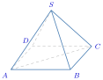
គេឱ្យរង្វង់ \(\displaystyle C\) មានអង្កត់ផ្ចិត \(\displaystyle AB\) នៅក្នុងប្លង់ \(\displaystyle \alpha\) ។ បន្ទាត់ \(\displaystyle L\) កែងប្លង់ \(\displaystyle \alpha\) ត្រង់ \(\displaystyle A\) ។ យក \(\displaystyle P\) ជាចំណុចមួយនៅលើបន្ទាត់ \(\displaystyle L\) ។ បង្ហាញថា ចំពោះគ្រប់ចំណុច \(\displaystyle M\in C\) គេបាន \(\displaystyle \vec{PM}\cdot\vec{MB}=0\) ។
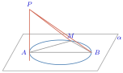
ចម្លើយលំហាត់
- 1. ក. \(\displaystyle \vec{x} = 3\vec{v} - 2\vec{u} = (21, 27, -24) - (8, -4, 10) = (13, 31, -34)\) ។ ខ. \(\displaystyle 2\vec{x} = 4\vec{u} - 4\vec{v} \implies \vec{x} = 2\vec{u} - 2\vec{v} = (8, -4, 10) - (14, 18, -16) = (-6, -22, 26)\) ។
- 2. ផ្ទឹម \(\displaystyle \vec{p} = (l + m,\, l + n,\, m + n) = (5, 6, 7)\) បាន \(\displaystyle l + m = 5\), \(\displaystyle l + n = 6\), \(\displaystyle m + n = 7\) ។ បូកទាំងបីសមីការ \(\displaystyle 2(l + m + n) = 18 \implies l + m + n = 9\) ដូច្នេះ \(\displaystyle n = 4\), \(\displaystyle m = 3\), \(\displaystyle l = 2\) គឺ \(\displaystyle \vec{p} = 2\vec{u} + 3\vec{v} + 4\vec{w}\) ។
- 3. ក. \(\displaystyle |\vec{u}| = \sqrt{3^2 + (-4)^2 + 5^2} = \sqrt{50} = 5\sqrt{2}\) ; \(\displaystyle \cos\alpha = \dfrac{3}{5\sqrt{2}} = \dfrac{3\sqrt{2}}{10}\), \(\displaystyle \cos\beta = -\dfrac{4}{5\sqrt{2}} = -\dfrac{2\sqrt{2}}{5}\), \(\displaystyle \cos\gamma = \dfrac{5}{5\sqrt{2}} = \dfrac{\sqrt{2}}{2}\) ។ ខ. \(\displaystyle |\vec{v}| = \sqrt{(-3)^2 + 2^2 + (2\sqrt{3})^2} = \sqrt{9 + 4 + 12} = 5\) ; \(\displaystyle \cos\alpha = -\dfrac{3}{5}\), \(\displaystyle \cos\beta = \dfrac{2}{5}\), \(\displaystyle \cos\gamma = \dfrac{2\sqrt{3}}{5}\) ។
- 4. ក. \(\displaystyle \vec{u} \cdot \vec{v} = 2(3x) - 1(5) + 5(4y - 2) = 6x + 20y - 15 = 0\) ដូច្នេះ \(\displaystyle 6x + 20y = 15\) (ទំនាក់ទំនងរវាង \(\displaystyle x\) និង \(\displaystyle y\) ; ឧទាហរណ៍ \(\displaystyle y = \dfrac{15 - 6x}{20}\)) ។ ខ. \(\displaystyle \vec{u} \cdot \vec{w} = 2(z - 1) - 2 + 5(z + 1) = 7z + 1 = 0 \implies z = -\dfrac{1}{7}\) ។
- 5. ពី \(\displaystyle \vec{u} \cdot \vec{v} = 0\), \(\displaystyle \vec{u} \cdot \vec{w} = 0\), \(\displaystyle \vec{v} \cdot \vec{w} = 0\) បានប្រព័ន្ធ \(\displaystyle 2x + 4y + 36 = 0\), \(\displaystyle 2x + 6z + 16 = 0\), \(\displaystyle 4y + 6z + 4 = 0\) ។ ដកសមីការទី ១ និងទី ២ ៖ \(\displaystyle 4y - 6z = -20\) បូកនឹង \(\displaystyle 4y + 6z = -4\) បាន \(\displaystyle 8y = -24 \implies y = -3\), \(\displaystyle z = \dfrac{4}{3}\), \(\displaystyle x = -12\) ។
- 6. ពី \(\displaystyle \vec{u} \cdot \vec{x} = 0\) (\(\displaystyle x_1 + 2x_2 - 3x_3 = 0\)) និង \(\displaystyle \vec{v} \cdot \vec{x} = 0\) (\(\displaystyle 2x_1 - x_2 - 2x_3 = 0\)) ទាញបាន \(\displaystyle x_1 = \dfrac{7}{5}x_3\) និង \(\displaystyle x_2 = \dfrac{4}{5}x_3\) ។ ផ្ទៀងផ្ទាត់ \(\displaystyle \vec{w} \cdot \vec{x} = \left(\dfrac{7}{5} - \dfrac{12}{5} + 1\right)x_3 = 0\) ពិតជានិច្ច ។ ដូច្នេះ \(\displaystyle x_1 : x_2 : x_3 = 7 : 4 : 5\) ។
- 7. \(\displaystyle \vec{u} \cdot \vec{w} = \vec{u} \cdot \vec{v} - k|\vec{u}|^2 = (4 - 6 - 4) - k(4 + 4 + 1) = -6 - 9k = 0 \implies k = -\dfrac{2}{3}\) ។ ដូច្នេះ \(\displaystyle \vec{w} = (2, 3, -4) + \dfrac{2}{3}(2, -2, 1) = \left(\dfrac{10}{3}, \dfrac{5}{3}, -\dfrac{10}{3}\right)\) ។
- 8. \(\displaystyle AB = \sqrt{0 + (-2)^2 + (-2)^2} = 2\sqrt{2}\), \(\displaystyle BC = \sqrt{2^2 + 2^2 + 0} = 2\sqrt{2}\), \(\displaystyle AC = \sqrt{2^2 + 0 + (-2)^2} = 2\sqrt{2}\) ។ ដោយ \(\displaystyle AB = BC = AC\) នោះ \(\displaystyle \triangle ABC\) ជាត្រីកោណសម័ង្ស ។
- 9. ក. \(\displaystyle \vec{u} \cdot \vec{v} = (1 + \sqrt{2})(1 - \sqrt{2}) = -1\), \(\displaystyle \vec{v} \cdot \vec{w} = -1\), \(\displaystyle \vec{w} \cdot \vec{u} = 3\) ។ ខ. \(\displaystyle \vec{u} \cdot \vec{v} = \dfrac{2}{3}\cdot\dfrac{1}{2} + \left(-\dfrac{1}{6}\right)(-2) + \dfrac{1}{2}\cdot\dfrac{2}{5} = \dfrac{1}{3} + \dfrac{1}{3} + \dfrac{1}{5} = \dfrac{13}{15}\) ; \(\displaystyle \vec{v} \cdot \vec{w} = \dfrac{1}{2} - 2 + \dfrac{2}{5} = -\dfrac{11}{10}\) ; \(\displaystyle \vec{w} \cdot \vec{u} = \dfrac{2}{3} - \dfrac{1}{6} + \dfrac{1}{2} = 1\) ។
- 10. ក. \(\displaystyle \triangle SAB\) សម័ង្សជ្រុង \(\displaystyle a\) នោះ \(\displaystyle \vec{SA} \cdot \vec{SB} = a^2\cos 60^\circ = \dfrac{1}{2}a^2\) ។ ខ. \(\displaystyle AC = a\sqrt{2}\) និង \(\displaystyle SA^2 + SC^2 = 2a^2 = AC^2 \implies SA \perp SC\) ដូច្នេះ \(\displaystyle \vec{SA} \cdot \vec{SC} = 0\) ។ គ. \(\displaystyle \vec{SA} \cdot \vec{AC} = \vec{SA} \cdot (\vec{SC} - \vec{SA}) = 0 - a^2 = -a^2\) ។
- 11. \(\displaystyle \vec{PM} \cdot \vec{MB} = (\vec{PA} + \vec{AM}) \cdot \vec{MB} = \vec{PA} \cdot \vec{MB} + \vec{AM} \cdot \vec{MB}\) ។ ដោយ \(\displaystyle L \perp \alpha\) នោះ \(\displaystyle PA \perp MB \implies \vec{PA} \cdot \vec{MB} = 0\) ហើយ \(\displaystyle M\) ស្ថិតលើរង្វង់អង្កត់ផ្ចិត \(\displaystyle AB\) នោះ \(\displaystyle AM \perp MB \implies \vec{AM} \cdot \vec{MB} = 0\) ។ ដូច្នេះ \(\displaystyle \vec{PM} \cdot \vec{MB} = 0\) ។
ខ្លឹមសារ៖ សៀវភៅពុម្ពគណិតវិទ្យាថ្នាក់ទី១២ របស់ក្រសួងអប់រំ យុវជន និងកីឡា · វាយអត្ថបទ គូររូបភាពឡើងវិញ និងរៀបចំលើអនឡាញដោយលោកគ្រូ សាន សុខលី សម្រាប់ការសិក្សាដោយឥតគិតថ្លៃ និងមិនរកប្រាក់ចំណេញ។ មិនមែនជាការបោះពុម្ពផ្លូវការរបស់ក្រសួងទេ។